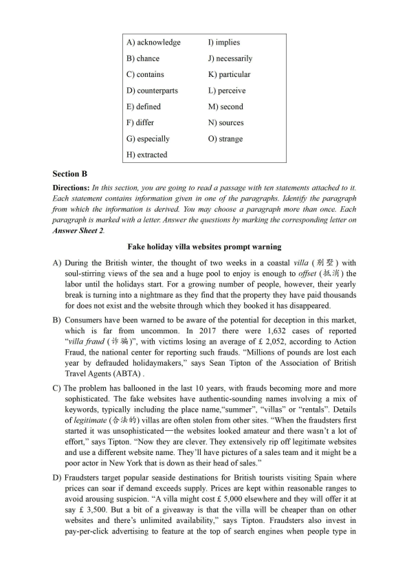
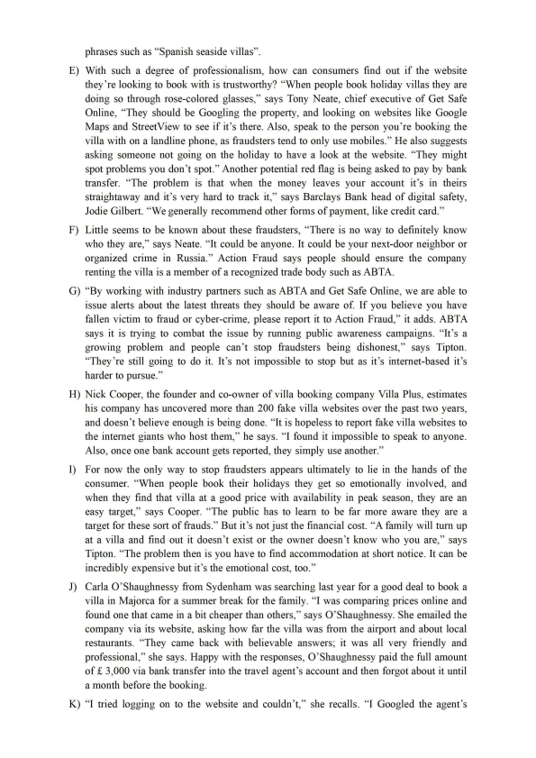
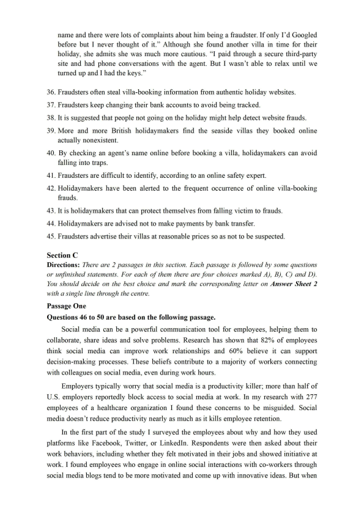
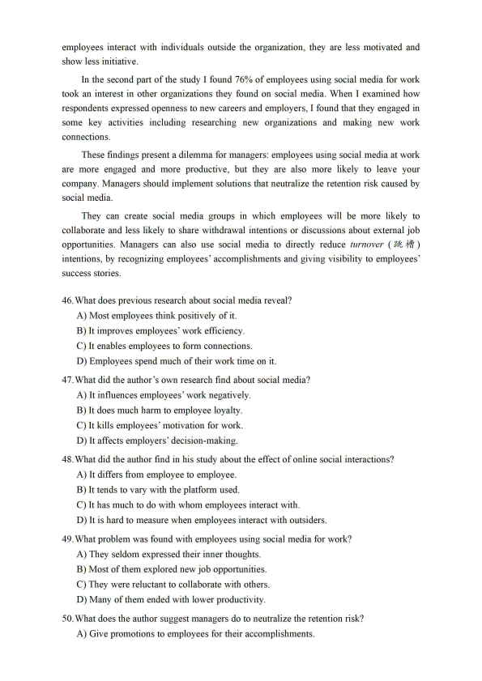
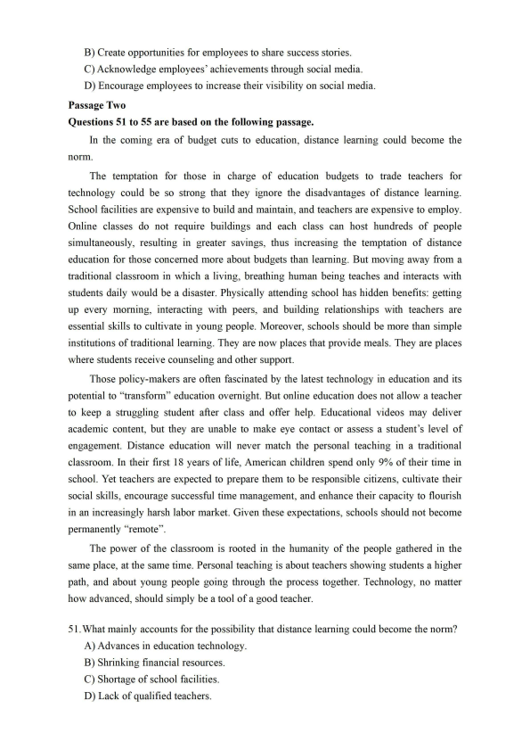
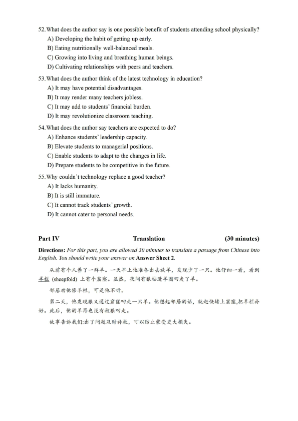

第 1 / 7 页

2022年06 月大学英语四级考试真题(第2 套)
Part I
Writing
(30minutes)
Directions: Suppose you are going to write a proposal to your student union for enriching
students' extracurricular activities. You are to write about what activities to organize and why.
You will have 30 minutes to write the proposal. You should write at least 120 words but no more
than 180 words.
Part II
Listening Comprehension
(25 minutes)
Part III
Reading Comprehension
(40 minutes)
Section A
Directions: In this section, there is a passage with ten blanks. You are required to select one
word for each blank from a list o f choices given in a word bank following the passage. Read the
passage through carefully before making your choices, Each choice in the bank
is identified
by a letter. Please mark the corresponding letter for each item on Answer Sheet 2 with a single
line through the centre. You may not use any o f the words in the bank more than once.
Questions 26 to 35 are based on the following passage.
If you've ever looked at the ingredients list while grocery shopping, chances are
you've seen the term "natural flavors". But have you taken a
26
to consider what these
natural flavors actually are?
Most of us might think that "natural flavors" are, well, naturally good for us.
A recent study in the journal Appetite found that when the word "natural“ appears
on packaging, people
27
that the food within is indeed healthier. In truth, natural
flavors do not
28
much, at least chemically speaking, from their flavor-boosting
29
:
artificial flavors. Both can be made in a lab by trained flavorists, but artificial flavors use
chemicals to give a product a
30
smell or taste.
Natural flavors come from plant or animal
31
like fruit, vegetable, meat, fish
or milk that is then processed or refined in some way. In short, natural flavors are
32
from plants and animals to create specific flavors for processed foods. But that does not
33
make it easier to tell what is really in your food. Because the Food and Drug
Administration (FDA) has not
34
the term, companies can use it to refer to pretty
much anything derived from a plant or animal. And natural flavors can also include a
variety of chemical additives, such as preservatives. The FDA doesn't require companies
to reveal what additional chemicals a specific item
35
.
So if you want to know for certain what you're getting with your groceries, you might
want to stick to the farmer^ market.
提示：2022年6月本套听力内容与第一套完全一致，只是选项顺序不同，故而未重复显示。
查看 / 复制本页文字
2022年06 月大学英语四级考试真题(第2 套) Part I Writing (30minutes) Directions: Suppose you are going to write a proposal to your student union for enriching students' extracurricular activities. You are to write about what activities to organize and why. You will have 30 minutes to write the proposal. You should write at least 120 words but no more than 180 words. Part II Listening Comprehension (25 minutes) Part III Reading Comprehension (40 minutes) Section A Directions: In this section, there is a passage with ten blanks. You are required to select one word for each blank from a list o f choices given in a word bank following the passage. Read the passage through carefully before making your choices, Each choice in the bank is identified by a letter. Please mark the corresponding letter for each item on Answer Sheet 2 with a single line through the centre. You may not use any o f the words in the bank more than once. Questions 26 to 35 are based on the following passage. If you've ever looked at the ingredients list while grocery shopping, chances are you've seen the term "natural flavors". But have you taken a 26 to consider what these natural flavors actually are? Most of us might think that "natural flavors" are, well, naturally good for us. A recent study in the journal Appetite found that when the word "natural“ appears on packaging, people 27 that the food within is indeed healthier. In truth, natural flavors do not 28 much, at least chemically speaking, from their flavor-boosting 29 : artificial flavors. Both can be made in a lab by trained flavorists, but artificial flavors use chemicals to give a product a 30 smell or taste. Natural flavors come from plant or animal 31 like fruit, vegetable, meat, fish or milk that is then processed or refined in some way. In short, natural flavors are 32 from plants and animals to create specific flavors for processed foods. But that does not 33 make it easier to tell what is really in your food. Because the Food and Drug Administration (FDA) has not 34 the term, companies can use it to refer to pretty much anything derived from a plant or animal. And natural flavors can also include a variety of chemical additives, such as preservatives. The FDA doesn't require companies to reveal what additional chemicals a specific item 35 . So if you want to know for certain what you're getting with your groceries, you might want to stick to the farmer^ market. 提示：2022年6月本套听力内容与第一套完全一致，只是选项顺序不同，故而未重复显示。
第 2 / 7 页

A) acknowledge
I) implies
B) chance
J) necessarily
C) contains
K) particular
D) counterparts
L) perceive
E) defined
M) second
F) differ
N) sources
G) especially
O) strange
H) extracted
Section B
Directions: In this section, you are going to read a passage with ten statements attached to it.
Each statement contains information given in one o f the paragraphs. Identify the paragraph
from which the information is derived. You may choose a paragraph more than once. Each
paragraph is marked with a letter. Answer the questions by marking the corresponding letter on
Answer Sheet 2.
Fake holiday villa websites prompt warning
A) During the British winter, the thought of two weeks in a coastal villa ( 另U 型) with
soul-stirring views of the sea and a huge pool to enjoy is enough to offset (*氐消)the
labor until the holidays start. For a growing number of people, however, their yearly
break is turning into a nightmare as they find that the property they have paid thousands
for does not exist and the website through which they booked it has disappeared.
B) Consumers have been warned to be aware of the potential for deception in this market,
which is far from uncommon. In 2017 there were 1,632 cases of reported
""villa fraud ( 诈骗)“，with victims losing an average of £ 2,052, according to Action
Fraud, the national center for reporting such frauds. "'Millions of pounds are lost each
year by defrauded holidaym akers,says Sean Tipton of the Association of British
Travel Agents (ABTA).
C) The problem has ballooned in the last 10 years, with frauds becoming more and more
sophisticated. The fake websites have authentic-sounding names involving a mix of
keywords, typically including the place name,“summer", "villas" or "rentals”. Details
of legitimate (合法的)villas are often stolen from other sites. "When the fraudsters first
started it was unsophisticated一the websites looked amateur and there wasn't a lot of
effort J says Tipton. "Now they are clever. They extensively rip off legitimate websites
and use a different website name. They911 have pictures of a sales team and it might be a
poor actor in New York that is down as their head of sales.”
D) Fraudsters target popular seaside destinations for British tourists visiting Spain where
prices can soar if demand exceeds supply. Prices are kept within reasonable ranges to
avoid arousing suspicion. CCA villa might cost £ 5,000 elsewhere and they will offer it at
say £ 3,500. But a bit of a giveaway is that the villa will be cheaper than on other
websites and there9s unlimited availability,says Tipton. Fraudsters also invest in
pay-per-click advertising to feature at the top of search engines when people type in
查看 / 复制本页文字
A) acknowledge I) implies B) chance J) necessarily C) contains K) particular D) counterparts L) perceive E) defined M) second F) differ N) sources G) especially O) strange H) extracted Section B Directions: In this section, you are going to read a passage with ten statements attached to it. Each statement contains information given in one o f the paragraphs. Identify the paragraph from which the information is derived. You may choose a paragraph more than once. Each paragraph is marked with a letter. Answer the questions by marking the corresponding letter on Answer Sheet 2. Fake holiday villa websites prompt warning A) During the British winter, the thought of two weeks in a coastal villa ( 另U 型) with soul-stirring views of the sea and a huge pool to enjoy is enough to offset (*氐消)the labor until the holidays start. For a growing number of people, however, their yearly break is turning into a nightmare as they find that the property they have paid thousands for does not exist and the website through which they booked it has disappeared. B) Consumers have been warned to be aware of the potential for deception in this market, which is far from uncommon. In 2017 there were 1,632 cases of reported ""villa fraud ( 诈骗)“，with victims losing an average of £ 2,052, according to Action Fraud, the national center for reporting such frauds. "'Millions of pounds are lost each year by defrauded holidaym akers,says Sean Tipton of the Association of British Travel Agents (ABTA). C) The problem has ballooned in the last 10 years, with frauds becoming more and more sophisticated. The fake websites have authentic-sounding names involving a mix of keywords, typically including the place name,“summer", "villas" or "rentals”. Details of legitimate (合法的)villas are often stolen from other sites. "When the fraudsters first started it was unsophisticated一the websites looked amateur and there wasn't a lot of effort J says Tipton. "Now they are clever. They extensively rip off legitimate websites and use a different website name. They911 have pictures of a sales team and it might be a poor actor in New York that is down as their head of sales.” D) Fraudsters target popular seaside destinations for British tourists visiting Spain where prices can soar if demand exceeds supply. Prices are kept within reasonable ranges to avoid arousing suspicion. CCA villa might cost £ 5,000 elsewhere and they will offer it at say £ 3,500. But a bit of a giveaway is that the villa will be cheaper than on other websites and there9s unlimited availability,says Tipton. Fraudsters also invest in pay-per-click advertising to feature at the top of search engines when people type in
第 3 / 7 页

phrases such as “Spanish seaside villas”.
E) With such a degree of professionalism, how can consumers find out if the website
they're looking to book with is trustworthy? ”When people book holiday villas they are
doing so through rose-colored glasses/9 says Tony Neate, chief executive of Get Safe
Online, “They should be Googling the property, and looking on websites like Google
Maps and StreetView to see if it's there. Also, speak to the person you're booking the
villa with on a landline phone, as fraudsters tend to only use mobiles.^^ He also suggests
asking someone not going on the holiday to have a look at the website. <cThey might
spot problems you don't spot." Another potential red flag is being asked to pay by bank
transfer. "The problem is that when the money leaves your account it's in theirs
straightaway and it's very hard to track it," says Barclays Bank head of digital safety,
Jodie Gilbert. "We generally recommend other forms of payment, like credit card.^^
F) Little seems to be known about these fraudsters, ctThere is no way to definitely know
who they are,^^ says Neate. ccIt could be anyone. It could be your next-door neighbor or
organized crime in Russia.^^ Action Fraud says people should ensure the company
renting the villa is a member of a recognized trade body such as ABTA.
G) “By working with industry partners such as ABTA and Get Safe Online, we are able to
issue alerts about the latest threats they should be aware of. If you believe you have
fallen victim to fraud or cyber-crime, please report it to Action Fraud,it adds. ABTA
says it is trying to combat the issue by running public awareness campaigns. "It's a
growing problem and people can't stop fraudsters being dishonest/9 says Tipton.
“They're still going to do it. It's not impossible to stop but as it's internet-based it's
harder to pursue.^^
H) Nick Cooper, the founder and co-owner of villa booking company Villa Plus, estimates
his company has uncovered more than 200 fake villa websites over the past two years,
and doesn't believe enough is being done. "It is hopeless to report fake villa websites to
the internet giants who host them,^^ he says. "I found it impossible to speak to anyone.
Also, once one bank account gets reported, they simply use another.^^
I) For now the only way to stop fraudsters appears ultimately to lie in the hands of the
consumer. "When people book their holidays they get so emotionally involved, and
when they find that villa at a good price with availability in peak season, they are an
easy target/9 says Cooper. ccThe public has to learn to be far more aware they are a
target for these sort of frauds.^^ But it's not just the financial cost. "A family will turn up
at a villa and find out it doesn't exist or the owner doesn't know who you are,^^ says
Tipton. "The problem then is you have to find accommodation at short notice. It can be
incredibly expensive but it's the emotional cost, too.”
J) Carla O9 Shaughnessy from Sydenham was searching last year for a good deal to book a
villa in Majorca for a summer break for the family.
was comparing prices online and
found one that came in a bit cheaper than others,says O9Shaughnessy. She emailed the
company via its website, asking how far the villa was from the airport and about local
restaurants. "They came back with believable answers; it was all very friendly and
professional,she says. Happy with the responses, O9Shaughnessy paid the full amount
of £ 3,000 via bank transfer into the travel agent's account and then forgot about it until
a month before the booking.
K) “I tried logging on to the website and couldn't," she recalls. "I Googled the agent's
查看 / 复制本页文字
phrases such as “Spanish seaside villas”. E) With such a degree of professionalism, how can consumers find out if the website they're looking to book with is trustworthy? ”When people book holiday villas they are doing so through rose-colored glasses/9 says Tony Neate, chief executive of Get Safe Online, “They should be Googling the property, and looking on websites like Google Maps and StreetView to see if it's there. Also, speak to the person you're booking the villa with on a landline phone, as fraudsters tend to only use mobiles.^^ He also suggests asking someone not going on the holiday to have a look at the website. <cThey might spot problems you don't spot." Another potential red flag is being asked to pay by bank transfer. "The problem is that when the money leaves your account it's in theirs straightaway and it's very hard to track it," says Barclays Bank head of digital safety, Jodie Gilbert. "We generally recommend other forms of payment, like credit card.^^ F) Little seems to be known about these fraudsters, ctThere is no way to definitely know who they are,^^ says Neate. ccIt could be anyone. It could be your next-door neighbor or organized crime in Russia.^^ Action Fraud says people should ensure the company renting the villa is a member of a recognized trade body such as ABTA. G) “By working with industry partners such as ABTA and Get Safe Online, we are able to issue alerts about the latest threats they should be aware of. If you believe you have fallen victim to fraud or cyber-crime, please report it to Action Fraud,it adds. ABTA says it is trying to combat the issue by running public awareness campaigns. "It's a growing problem and people can't stop fraudsters being dishonest/9 says Tipton. “They're still going to do it. It's not impossible to stop but as it's internet-based it's harder to pursue.^^ H) Nick Cooper, the founder and co-owner of villa booking company Villa Plus, estimates his company has uncovered more than 200 fake villa websites over the past two years, and doesn't believe enough is being done. "It is hopeless to report fake villa websites to the internet giants who host them,^^ he says. "I found it impossible to speak to anyone. Also, once one bank account gets reported, they simply use another.^^ I) For now the only way to stop fraudsters appears ultimately to lie in the hands of the consumer. "When people book their holidays they get so emotionally involved, and when they find that villa at a good price with availability in peak season, they are an easy target/9 says Cooper. ccThe public has to learn to be far more aware they are a target for these sort of frauds.^^ But it's not just the financial cost. "A family will turn up at a villa and find out it doesn't exist or the owner doesn't know who you are,^^ says Tipton. "The problem then is you have to find accommodation at short notice. It can be incredibly expensive but it's the emotional cost, too.” J) Carla O9 Shaughnessy from Sydenham was searching last year for a good deal to book a villa in Majorca for a summer break for the family. was comparing prices online and found one that came in a bit cheaper than others,says O9Shaughnessy. She emailed the company via its website, asking how far the villa was from the airport and about local restaurants. "They came back with believable answers; it was all very friendly and professional,she says. Happy with the responses, O9Shaughnessy paid the full amount of £ 3,000 via bank transfer into the travel agent's account and then forgot about it until a month before the booking. K) “I tried logging on to the website and couldn't," she recalls. "I Googled the agent's
第 4 / 7 页

name and there were lots of complaints about him being a fraudster. If only I'd Googled
before but I never thought of it." Although she found another villa in time for their
holiday, she admits she was much more cautious. <CI paid through a secure third-party
site and had phone conversations with the agent. But I wasn't able to relax until we
turned up and I had the keys.”
36. Fraudsters often steal villa-booking information from authentic holiday websites.
37. Fraudsters keep changing their bank accounts to avoid being tracked.
38. It is suggested that people not going on the holiday might help detect website frauds.
39. More and more British holidaymakers find the seaside villas they booked online
actually nonexistent.
40. By checking an agent's name online before booking a villa, holidaymakers can avoid
falling into traps.
41. Fraudsters are difficult to identify, according to an online safety expert.
42. Holidaymakers have been alerted to the frequent occurrence of online villa-booking
frauds.
43. It is holidaymakers that can protect themselves from falling victim to frauds.
44. Holidaymakers are advised not to make payments by bank transfer.
45. Fraudsters advertise their villas at reasonable prices so as not to be suspected.
Section C
Directions: There are 2 passages in this section. Each passage is followed by some questions
or unfinished statements. For each of them there are four choices marked A), B), C) and D).
You should decide on the best choice and mark the corresponding letter on Answer Sheet 2
with a single line through the centre.
Passage One
Questions 46 to 50 are based on the following passage.
Social media can be a powerful communication tool for employees, helping them to
collaborate, share ideas and solve problems. Research has shown that 82% of employees
think social media can improve work relationships and 60% believe it can support
decision-making processes. These beliefs contribute to a majority of workers connecting
with colleagues on social media, even during work hours.
Employers typically worry that social media is a productivity killer; more than half of
U.S. employers reportedly block access to social media at work. In my research with 277
employees of a healthcare organization I found these concerns to be misguided. Social
media doesn't reduce productivity nearly as much as it kills employee retention.
In the first part of the study I surveyed the employees about why and how they used
platforms like Facebook, Twitter, or Linkedln. Respondents were then asked about their
work behaviors, including whether they felt motivated in their jobs and showed initiative at
work. I found employees who engage in online social interactions with co-workers through
social media blogs tend to be more motivated and come up with innovative ideas. But when
查看 / 复制本页文字
name and there were lots of complaints about him being a fraudster. If only I'd Googled before but I never thought of it." Although she found another villa in time for their holiday, she admits she was much more cautious. <CI paid through a secure third-party site and had phone conversations with the agent. But I wasn't able to relax until we turned up and I had the keys.” 36. Fraudsters often steal villa-booking information from authentic holiday websites. 37. Fraudsters keep changing their bank accounts to avoid being tracked. 38. It is suggested that people not going on the holiday might help detect website frauds. 39. More and more British holidaymakers find the seaside villas they booked online actually nonexistent. 40. By checking an agent's name online before booking a villa, holidaymakers can avoid falling into traps. 41. Fraudsters are difficult to identify, according to an online safety expert. 42. Holidaymakers have been alerted to the frequent occurrence of online villa-booking frauds. 43. It is holidaymakers that can protect themselves from falling victim to frauds. 44. Holidaymakers are advised not to make payments by bank transfer. 45. Fraudsters advertise their villas at reasonable prices so as not to be suspected. Section C Directions: There are 2 passages in this section. Each passage is followed by some questions or unfinished statements. For each of them there are four choices marked A), B), C) and D). You should decide on the best choice and mark the corresponding letter on Answer Sheet 2 with a single line through the centre. Passage One Questions 46 to 50 are based on the following passage. Social media can be a powerful communication tool for employees, helping them to collaborate, share ideas and solve problems. Research has shown that 82% of employees think social media can improve work relationships and 60% believe it can support decision-making processes. These beliefs contribute to a majority of workers connecting with colleagues on social media, even during work hours. Employers typically worry that social media is a productivity killer; more than half of U.S. employers reportedly block access to social media at work. In my research with 277 employees of a healthcare organization I found these concerns to be misguided. Social media doesn't reduce productivity nearly as much as it kills employee retention. In the first part of the study I surveyed the employees about why and how they used platforms like Facebook, Twitter, or Linkedln. Respondents were then asked about their work behaviors, including whether they felt motivated in their jobs and showed initiative at work. I found employees who engage in online social interactions with co-workers through social media blogs tend to be more motivated and come up with innovative ideas. But when
第 5 / 7 页

employees interact with individuals outside the organization, they are less motivated and
show less initiative.
In the second part of the study I found 76% of employees using social media for work
took an interest in other organizations they found on social media. When I examined how
respondents expressed openness to new careers and employers, I found that they engaged in
some key activities including researching new organizations and making new work
connections.
These findings present a dilemma for managers: employees using social media at work
are more engaged and more productive, but they are also more likely to leave your
company. Managers should implement solutions that neutralize the retention risk caused by
social media.
They can create social media groups in which employees will be more likely to
collaborate and less likely to share withdrawal intentions or discussions about external job
opportunities. Managers can also use social media to directly reduce turnover (跳槽)
intentions, by recognizing employees9 accomplishments and giving visibility to employees9
success stories.
46. What does previous research about social media reveal?
A) Most employees think positively of it.
B) It improves employees9 work efficiency.
C) It enables employees to form connections.
D) Employees spend much of their work time on it.
47. What did the author's own research find about social media?
A) It influences employees9 work negatively.
B) It does much harm to employee loyalty.
C) It kills employees9 motivation for work.
D) It affects employers9 decision-making.
48. What did the author find in his study about the effect of online social interactions?
A) It differs from employee to employee.
B) It tends to vary with the platform used.
C) It has much to do with whom employees interact with.
D) It is hard to measure when employees interact with outsiders.
49. What problem was found with employees using social media for work?
A) They seldom expressed their inner thoughts.
B) Most of them explored new job opportunities.
C) They were reluctant to collaborate with others.
D) Many of them ended with lower productivity.
50. What does the author suggest managers do to neutralize the retention risk?
A) Give promotions to employees for their accomplishments.
查看 / 复制本页文字
employees interact with individuals outside the organization, they are less motivated and show less initiative. In the second part of the study I found 76% of employees using social media for work took an interest in other organizations they found on social media. When I examined how respondents expressed openness to new careers and employers, I found that they engaged in some key activities including researching new organizations and making new work connections. These findings present a dilemma for managers: employees using social media at work are more engaged and more productive, but they are also more likely to leave your company. Managers should implement solutions that neutralize the retention risk caused by social media. They can create social media groups in which employees will be more likely to collaborate and less likely to share withdrawal intentions or discussions about external job opportunities. Managers can also use social media to directly reduce turnover (跳槽) intentions, by recognizing employees9 accomplishments and giving visibility to employees9 success stories. 46. What does previous research about social media reveal? A) Most employees think positively of it. B) It improves employees9 work efficiency. C) It enables employees to form connections. D) Employees spend much of their work time on it. 47. What did the author's own research find about social media? A) It influences employees9 work negatively. B) It does much harm to employee loyalty. C) It kills employees9 motivation for work. D) It affects employers9 decision-making. 48. What did the author find in his study about the effect of online social interactions? A) It differs from employee to employee. B) It tends to vary with the platform used. C) It has much to do with whom employees interact with. D) It is hard to measure when employees interact with outsiders. 49. What problem was found with employees using social media for work? A) They seldom expressed their inner thoughts. B) Most of them explored new job opportunities. C) They were reluctant to collaborate with others. D) Many of them ended with lower productivity. 50. What does the author suggest managers do to neutralize the retention risk? A) Give promotions to employees for their accomplishments.
第 6 / 7 页

B) Create opportunities for employees to share success stories.
C) Acknowledge employees9 achievements through social media.
D) Encourage employees to increase their visibility on social media.
Passage Two
Questions 51 to 55 are based on the following passage.
In the coming era of budget cuts to education, distance learning could become the
norm.
The temptation for those in charge of education budgets to trade teachers for
technology could be so strong that they ignore the disadvantages of distance learning.
School facilities are expensive to build and maintain, and teachers are expensive to employ.
Online classes do not require buildings and each class can host hundreds of people
simultaneously, resulting in greater savings, thus increasing the temptation of distance
education for those concerned more about budgets than learning. But moving away from a
traditional classroom in which a living, breathing human being teaches and interacts with
students daily would be a disaster. Physically attending school has hidden benefits: getting
up every morning, interacting with peers, and building relationships with teachers are
essential skills to cultivate in young people. Moreover, schools should be more than simple
institutions of traditional learning. They are now places that provide meals. They are places
where students receive counseling and other support.
Those policy-makers are often fascinated by the latest technology in education and its
potential to “transform“ education overnight. But online education does not allow a teacher
to keep a struggling student after class and offer help. Educational videos may deliver
academic content, but they are unable to make eye contact or assess a student's level of
engagement. Distance education will never match the personal teaching in a traditional
classroom. In their first 18 years of life, American children spend only 9% of their time in
school. Yet teachers are expected to prepare them to be responsible citizens, cultivate their
social skills, encourage successful time management, and enhance their capacity to flourish
in an increasingly harsh labor market. Given these expectations, schools should not become
permanently “remote”.
The power of the classroom is rooted in the humanity of the people gathered in the
same place, at the same time. Personal teaching is about teachers showing students a higher
path, and about young people going through the process together. Technology, no matter
how advanced, should simply be a tool of a good teacher.
51. What mainly accounts for the possibility that distance learning could become the norm?
A) Advances in education technology.
B) Shrinking financial resources.
C) Shortage of school facilities.
D) Lack of qualified teachers.
查看 / 复制本页文字
B) Create opportunities for employees to share success stories. C) Acknowledge employees9 achievements through social media. D) Encourage employees to increase their visibility on social media. Passage Two Questions 51 to 55 are based on the following passage. In the coming era of budget cuts to education, distance learning could become the norm. The temptation for those in charge of education budgets to trade teachers for technology could be so strong that they ignore the disadvantages of distance learning. School facilities are expensive to build and maintain, and teachers are expensive to employ. Online classes do not require buildings and each class can host hundreds of people simultaneously, resulting in greater savings, thus increasing the temptation of distance education for those concerned more about budgets than learning. But moving away from a traditional classroom in which a living, breathing human being teaches and interacts with students daily would be a disaster. Physically attending school has hidden benefits: getting up every morning, interacting with peers, and building relationships with teachers are essential skills to cultivate in young people. Moreover, schools should be more than simple institutions of traditional learning. They are now places that provide meals. They are places where students receive counseling and other support. Those policy-makers are often fascinated by the latest technology in education and its potential to “transform“ education overnight. But online education does not allow a teacher to keep a struggling student after class and offer help. Educational videos may deliver academic content, but they are unable to make eye contact or assess a student's level of engagement. Distance education will never match the personal teaching in a traditional classroom. In their first 18 years of life, American children spend only 9% of their time in school. Yet teachers are expected to prepare them to be responsible citizens, cultivate their social skills, encourage successful time management, and enhance their capacity to flourish in an increasingly harsh labor market. Given these expectations, schools should not become permanently “remote”. The power of the classroom is rooted in the humanity of the people gathered in the same place, at the same time. Personal teaching is about teachers showing students a higher path, and about young people going through the process together. Technology, no matter how advanced, should simply be a tool of a good teacher. 51. What mainly accounts for the possibility that distance learning could become the norm? A) Advances in education technology. B) Shrinking financial resources. C) Shortage of school facilities. D) Lack of qualified teachers.
第 7 / 7 页

52. What does the author say is one possible benefit of students attending school physically?
A) Developing the habit of getting up early.
B) Eating nutritionally well-balanced meals.
C) Growing into living and breathing human beings.
D) Cultivating relationships with peers and teachers.
53. What does the author think of the latest technology in education?
A) It may have potential disadvantages.
B) It may render many teachers jobless.
C) It may add to students9 financial burden.
D) It may revolutionize classroom teaching.
54. What does the author say teachers are expected to do?
A) Enhance students9 leadership capacity.
B) Elevate students to managerial positions.
C) Enable students to adapt to the changes in life.
D) Prepare students to be competitive in the future.
55. Why couldn't technology replace a good teacher?
A) It lacks humanity.
B) It is still immature.
C) It cannot track students9 growth.
D) It cannot cater to personal needs.
Part IV
Translation
(30 minutes)
Directions: For this part, you are allowed 30 minutes to translate a passage from Chinese into
English. You should write your answer on Answer Sheet 2.
从前有个人养了一群羊。一天早上他准备出去放羊，发现少了一只。他仔细一看，看到
羊栏(she叩fold)上有个窟窿。显然，夜间有狼钻进羊圈叼走了羊。
邻居劝他修羊栏，可是他不听。
第二天，他发现狼又通过窟窿叼走一只羊。他想起邻居的话，就赶快堵上窟窿，把羊栏补
好。此后，他的羊再也没有被狼叼走。
故事告诉我们:出了问题及时补救，可以防止蒙受更大损失。
查看 / 复制本页文字
52. What does the author say is one possible benefit of students attending school physically? A) Developing the habit of getting up early. B) Eating nutritionally well-balanced meals. C) Growing into living and breathing human beings. D) Cultivating relationships with peers and teachers. 53. What does the author think of the latest technology in education? A) It may have potential disadvantages. B) It may render many teachers jobless. C) It may add to students9 financial burden. D) It may revolutionize classroom teaching. 54. What does the author say teachers are expected to do? A) Enhance students9 leadership capacity. B) Elevate students to managerial positions. C) Enable students to adapt to the changes in life. D) Prepare students to be competitive in the future. 55. Why couldn't technology replace a good teacher? A) It lacks humanity. B) It is still immature. C) It cannot track students9 growth. D) It cannot cater to personal needs. Part IV Translation (30 minutes) Directions: For this part, you are allowed 30 minutes to translate a passage from Chinese into English. You should write your answer on Answer Sheet 2. 从前有个人养了一群羊。一天早上他准备出去放羊，发现少了一只。他仔细一看，看到 羊栏(she叩fold)上有个窟窿。显然，夜间有狼钻进羊圈叼走了羊。 邻居劝他修羊栏，可是他不听。 第二天，他发现狼又通过窟窿叼走一只羊。他想起邻居的话，就赶快堵上窟窿，把羊栏补 好。此后，他的羊再也没有被狼叼走。 故事告诉我们:出了问题及时补救，可以防止蒙受更大损失。